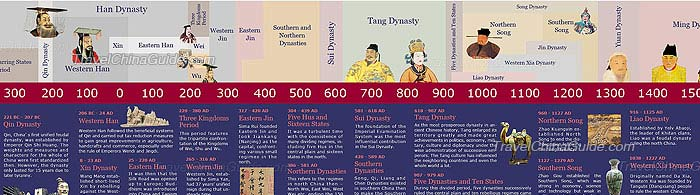

this is a website adout China
China has a long history,and I will tell you all about it right now!!!!
The history of Ancient China can be traced back over 4,000 years. Located on the eastern part of the continent of Asia, today China is the most populous country in the world. Throughout most of China's history it was ruled by powerful families called dynasties. The first dynasty was the Shang and the last was the Qing.
China's history time line: China, one of the countries that can boast of an ancient civilization, has a long and mysterious history - almost 5,000 years of it! Like most other great civilizations of the world, China can trace her culture back to a blend of small original tribes which have expanded till they became the great country we have today. It is recorded that Yuanmou man is the oldest hominoid in China and the oldest dynasty is Xia Dynasty. From the long history of China, there emerge many eminent people that have contributed a lot to the development of the whole country and to the enrichment of her history. Among them, there are emperors like Li Shimin (emperor Taizong of the Tang), philosophers like Confucius, great patriotic poets like Qu Yuan and so on. Chinese society has progressed through five major stages - Primitive Society, Slave Society, Feudal Society, Semi-feudal and Semi-colonial Society, and Socialist Society. The rise and fall of the great dynasties forms a thread that runs through Chinese history, almost from the beginning. Since the founding of the People's Republic of China on October 1st, 1949, China has become a socialist society and become stronger and stronger. 